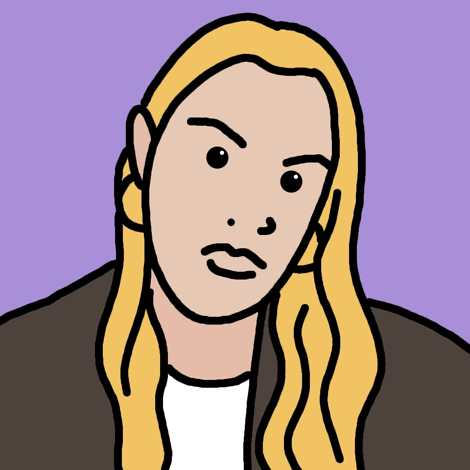

About Christiane

Christiane Deneser is an accessibility expert and web developer. She works at the intersection of digital accessibility, product development, and agile processes. She is German, based in Europe, and is available globally.
When she started out, she built accessible frontends for agency projects and collaborated in international, cross-functional agile teams. At Ableton, she initiated accessibility program work for their main sales and marketing web platform.
Now she plans and implements hands-on work for big and small organizations with complex needs. She translates standards, like EN 301 549 and WCAG, into everyday design and authoring practices. She performs website audits, remediation work, and creates sustainable design systems and component libraries.
As a certified Scrum Master and Scrum Product Owner, she helps teams integrate accessibility into their agile workflows.
Speaking & Community
Implementing Accessibility in a Large Sales and Marketing Platform: From Individual Responsibility to Shared Ownership
This talk presents a hands-on case study on integrating accessibility into a large-scale web platform developed by multiple cross-functional teams. It explores how accessibility can move from individual responsibility to shared ownership across domains, design systems, and product workflows.
The key takeaway: sustainable accessibility does not happen through individual effort alone. It needs structure, clear responsibilities, and practices that become specific to people’s daily work — from backlog and design to development and testing. Ultimately, accessibility is not a one-time project or checklist, but a maturity process that evolves with products, teams, and organizational culture.